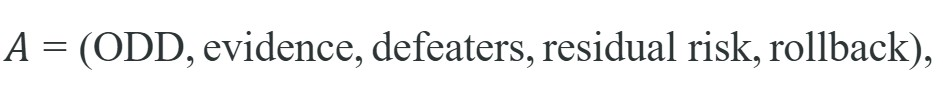
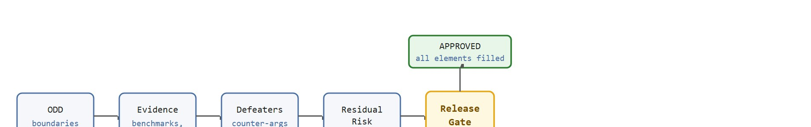

Approval is evidence traceability, not confidence performed in prose.
A Safety-Critical Controls Researcher
A delivery robot passes every lab benchmark, then injures a pedestrian on its first public route because the approval process never asked: "what happens outside the test corridor?" Embodied AI is now leaving controlled pilots and entering hospitals, warehouses, and streets, and the gap between "works in testing" and "safe to deploy" has never cost more to get wrong. A safety case closes that gap by making the argument explicit: here is the operating domain, here is the evidence, here is what we do not know, and here is who owns each residual risk. Work through this section and you will build and stress-test a release gate that an external auditor cannot dismiss as confidence performed in prose.
This section assumes familiarity with operating-domain definition from section 54.1, hazard identification and severity classification from section 54.3, and runtime monitoring from section 54.5. The approval tuple introduced here is extended into a full goal-structuring assurance graph in section 54.7, and the deployment architecture that enforces ODD boundaries at runtime is covered in Chapter 55.
Picture the moment a release board signs off on a robot that has aced every benchmark, and then ask the one question the score sheet never answered: when this machine enters a dangerous state in the field, is it detected, blocked, or exited fast enough to protect the person standing next to it? Deployment approval lives exactly at that boundary between learning and safety engineering, where "usually behaves well" is not the same claim as "safe to release."
As Figure 54.6.1 illustrates, deployment approval requires more than a successful demo: it needs a bounded operating domain, an evidence map, and named residual risks. The approval tuple is 
This structure matters in embodied AI because a robot acting in the physical world cannot be patched mid-motion. A software bug in a web service causes a failed request; the same class of reasoning gap in a mobile manipulator causes an irreversible collision. A benchmark score is evidence that something worked under controlled conditions, not a promise that it will work in the world. Each tuple element corresponds to a distinct failure mode that has caused real incidents: missing ODD boundaries led to autonomous vehicles operating in unvalidated weather; missing defeaters meant teams did not anticipate sensor degradation scenarios; missing rollback plans meant operators had no safe action when a system began behaving unexpectedly.
So far: deployment approval rests on five tuple elements (ODD, evidence, defeaters, residual risk, rollback), each one closing a specific failure mode seen in real incidents; the rest of this section walks through how a release board fills and checks each element in practice.
Figure 54.6.2 shows this tuple as a sequential gate: each element must be populated and traceable before the gate clears, and one missing element blocks approval no matter how strong the rest. Teams fill every element before the release board convenes. The hazard analysis from section 54.3 supplies the ODD as hard numerical thresholds. Evidence is artifacts linked to specific claims, gathered from evaluation panels, monitor tests, and override trials, typically compiled into a trace matrix (a table mapping each release claim to the specific document, log, or test result that supports it). Each defeater is a counter-argument that would invalidate a claim, so the team either refutes it with data or promotes it to a residual risk with a named owner. Rollback names the exact trigger and the sequence that returns authority to a human or halts the system. The tuple is complete only when every element is filled and traceable.

Approval is not a scalar threshold. It is a structured argument that says which evidence supports which claim and what conditions would invalidate the release.
Think of defeaters the way a chef thinks about expiry conditions on a recipe: the recipe works perfectly given fresh ingredients at room temperature, but the moment you ask "what if the eggs are a week old?" or "what if the kitchen is 35 degrees Celsius?", you have named a defeater. A good cook writes those boundary conditions on the card, not to ruin confidence in the dish, but because knowing when the recipe breaks is exactly what makes it safe to serve. A safety-case defeater does the same job: it names the condition under which your evidence would no longer support your claim, forcing you either to gather more evidence or to treat that condition as a residual risk with a named owner.
A common assumption is that deployment approval is a permanent, one-time certification: once a system passes the release gate, it is safe to operate indefinitely in any context that resembles the original test environment. This is wrong in embodied AI because approval is explicitly domain-bounded. The approved operating domain (ODD) names exact thresholds (lighting levels, terrain grade, pedestrian density) and those thresholds define the boundary of the safety argument, not a general capability. When conditions change, whether due to seasonal weather, a facility layout change, a sensor drift over time, or a software update, the original evidence no longer supports the original claims, and a new approval cycle is required. The correct mental model is that approval is a voucher tied to a specific (ODD, evidence, rollback) tuple: the voucher expires the moment the system operates outside that tuple, and no amount of past good performance extends its validity.
A delivery robot may be approved for indoor daytime office routes with marked lanes and trained operators, but not for crowded public spaces or unstructured loading docks. Approval is domain-bounded by design.
approval = {
"odd_defined": True,
"evidence_complete": False,
"override_tested": True,
"residual_risk_named": True,
}
approval["release_ready"] = all(approval.values())
print(approval)all(approval.values()) forces every element to be true; the single evidence_complete: False drives release_ready to False.{'odd_defined': True, 'evidence_complete': False, 'override_tested': True, 'residual_risk_named': True, 'release_ready': False}approval dictionary, confirming release_ready resolves to False because the evidence flag failed its threshold check.Trace the gate logic with the concrete delivery-robot evidence values. The gate evaluates release_ready = all(flags) over four boolean checks against their thresholds.
odd_defined = True.evidence_complete = False.override_tested = True.residual_risk_named = True.all([True, False, True, True]) short-circuits to False on the second element. Result: release_ready = False, release blocked on the single 2-percentage-point coverage gap.Expected output: The release is blocked because the evidence set is incomplete. That is exactly how a safety gate should behave: incomplete evidence is itself a meaningful decision signal.
Consider a concrete case. A last-mile delivery robot (Starship Technologies generation-3 chassis, indoor variant) was scoped to corridors at least 1.2 m wide, illuminance above 50 lux, and pedestrian density below 0.3 persons per square meter. Its ODD card set a maximum rated speed of 0.8 m/s and an emergency-stop latency budget of 120 ms. The release gate checked four evidence items: a 500-episode evaluation panel showing a hazard-intervention rate below 0.2 per hour, a monitor-coverage test confirming that 97% of injected faults triggered an alert within 80 ms, a human-override test across 40 scripted scenarios with zero missed stops, and a hazard log that closed all severity-1 items and deferred three severity-2 items to named owners. Monitor coverage missed the 99% target the safety case specified, so the evidence_complete flag stayed False and the team held the release for two weeks of sensor-fusion tuning before re-evaluation. That single gap, 97% coverage versus a 99% gate, added 14 days and three full re-runs of the 500-episode panel before approval cleared. One missed threshold turned a 500-episode evidence budget into a 1,500-episode one, tripling the evaluation cost before anyone touched the robot's code.
Assurance templates, hazard logs, experiment trackers, and Goal Structuring Notation style review packets help teams assemble release evidence consistently, where Goal Structuring Notation (GSN) is a graphical notation that links each top-level safety claim through subclaims to the specific evidence and challenge conditions that support it. The goal is not paperwork for its own sake, but traceable linkage between claims and evidence.
Concrete stack anchors for this chapter include ROS 2 lifecycle and diagnostics logs for authority boundaries, PyTorch or JAX evaluation artifacts for learned policy evidence, Weights & Biases or TensorBoard dashboards for release panels, CasADi or Drake model summaries for control assumptions, and GSN-style assurance templates that connect each claim to its evidence, defeater, owner, and rollback trigger.
| Artifact Tool | Why It Matters | Review Check |
|---|---|---|
| Goal Structuring Notation (GSN)-style templates | Make claim, subclaim, evidence, and defeater structure explicit. | Can the release board trace each top-level claim to a concrete artifact? |
| Hazard log plus issue tracker | Keeps mitigations, owners, and unresolved risks visible through release. | Are any high-severity hazards still open or ownerless? |
| Experiment tracker plus replay archive | Links evaluation panels, monitor tests, and override evidence to the decision packet. | Can another reviewer replay the exact evidence bundle used for approval? |
What would have happened if that 97% coverage figure had never been checked and the robot had shipped anyway? The question is not rhetorical: exactly this scenario, a system that passed every headline benchmark but missed a quiet coverage threshold, is the pattern behind most post-deployment safety incidents in fielded autonomous systems.
Avoiding that pattern is precisely what disciplined approval practice is built to do. Good approval practice names the boundary conditions in hard thresholds. A system can be approved for one environment, one workload, or one operator model without implying readiness everywhere else. In mature programs, each approval claim is backed by a trace matrix that points to benchmark artifacts, monitor tests, override results, and the exact owner for unresolved residual risks.
Naming those boundary conditions and their owners in prose is the human-readable half of the gate; the other half is stating the same boundary as a constrained objective a machine can check. Formally, a release gate should check an objective such as task utility subject to explicit constraints on hazard rate, intervention latency, monitor coverage, and residual risk. The approved policy is therefore not merely the argmax of performance (the single candidate that scores highest on the benchmark), it is the member of the candidate set whose evidence satisfies the safety case under the frozen operating-domain assumptions.
In practice, one of the most dangerous approval failures is domain creep after the gates close, where a system slowly begins operating outside the bounded domain because no one wrote the exclusions sharply enough or monitored them after release.
Domain creep typically unfolds in three stages. First, the ODD is written with soft language ("mostly flat terrain", "low traffic") rather than hard thresholds (grade below 5%, fewer than 10 vehicles per minute). Second, operators extend use to adjacent conditions that feel similar, loading docks after the indoor-only approval, or rainy days after a dry-weather approval, because nothing in the system actively enforces the boundary. Third, an incident occurs in the unapproved condition and the review board discovers the approval argument never covered it. The fix is to encode ODD boundaries as monitored runtime assertions, not just prose in a document: if the system detects it is outside its approved envelope (illuminance sensor reads below threshold, GPS geofence exits the approved zone) it should flag the violation and request operator confirmation before continuing. Waymo's operational design domain specification for its commercial robotaxi service is reported to include a runtime geofence check of this kind, typically withholding dispatch of a vehicle to a road segment not yet validated in its internal map database.
When encoding ODD boundaries as runtime assertions in ROS 2, use the diagnostic_updater package with a FunctionDiagnosticTask rather than hand-rolling a topic subscriber: it feeds results directly into the /diagnostics aggregator, which your safety monitor can already watch. Set the DiagnosticStatus level to ERROR (not WARN) when a hard ODD threshold is breached, such as illuminance falling below 50 lux or a GPS geofence exit, so that any downstream node subscribed to /diagnostics_agg with a level filter will trigger an immediate authority handoff rather than a loggable notice. A common mistake is publishing WARN for soft violations and ERROR for hard ones but never wiring the aggregator's error output to the safety arbiter, which means the boundary check runs but nothing acts on it.
Beginner (weekend): Build a minimal release-gate checker in Python using Gymnasium: define a two-field ODD (maximum episode length, minimum success rate), run a CartPole or LunarLander policy for 100 episodes, and print a structured approval tuple that blocks release if either threshold is unmet. The key challenge is learning to treat evaluation output as structured evidence rather than a pass/fail score. Intermediate (1 to 2 weeks): Implement an ODD-boundary monitor in ROS 2 for a simulated mobile robot in Gazebo or PyBullet: subscribe to sensor topics (illuminance, velocity, map-frame position), publish a DiagnosticStatus at ERROR level whenever a hard threshold is breached, and wire the aggregator output to a safety arbiter node that commands an emergency stop. The key challenge is closing the loop so that a detected ODD violation actually halts the robot within a configurable latency budget rather than just logging a warning. Advanced (3 to 4 weeks): Assemble a full safety-case packet for a LeRobot manipulation policy trained in Isaac Lab: define a Cartesian workspace ODD, collect a 200-episode evaluation panel with per-episode hazard annotations, write a GSN-style assurance template mapping each release claim to a concrete artifact, list at least three defeaters with named owners, and add a rollback trigger that re-engages gravity compensation when the policy's confidence estimator falls below a threshold. The key challenge is maintaining end-to-end traceability so every number in the release document links back to a replayable experiment artifact.
This section sets up the capstone logic of Section 54.7 on assurance arguments and prepares the transition to Chapter 55 on deployment architecture. The approval tuple introduced here (ODD, evidence, defeaters, residual risk, rollback) becomes the leaf structure of the full assurance graph in Section 54.7, where each element is expanded into a claim, context, and evidence pairing that a release board can trace and challenge individually.
Create a mock release packet for a small embodied system with an ODD card, hazard log, evaluation summary, override evidence, and one blocked release reason. Then ask whether the packet really supports the intended domain.
Do not let a passing benchmark substitute for an approval argument. Benchmarks are inputs to approval, not approval itself.
Three bounds define Waymo's commercial robotaxi ODD in San Francisco: geo-validated road segments (dispatch withholds any segment absent from the internal HD map), precipitation below 25 mm/h (above that rate, lidar point-cloud density drops below the 40-points-per-square-meter threshold that pedestrian detection requires), and speeds below 45 mph on surface streets. A Franka Research 3 arm in a shared lab workspace carries a similar set of bounds. The approval ODD fixes a Cartesian workspace envelope (a 0.85 m radius sphere from the base flange). The libfranka safety controller enforces a maximum joint-torque limit of 87 N m on joint 4. A human-proximity rule caps collaborative-mode speed at 0.25 m/s once a person enters the SafetyZone3D volume (a sensor-defined 3D safety-rated monitored space around the arm). A restricted object set checks each part against a CAD-registered library before the task begins. Extending either system beyond these thresholds, adding an unvalidated road segment or an unregistered part, requires a new approval cycle, not an operator override.
Nuro's R2 driverless delivery vehicle received the first NHTSA exemption granted to a self-driving vehicle, and that approval was explicitly domain-bounded: low-speed (under 25 mph) operation on mapped neighborhood streets in named metro areas, with no human occupant to protect. The exemption petition functioned as a safety case, mapping each operational claim to evidence and naming the residual risks NHTSA accepted, so any extension to higher speeds or new cities requires a fresh approval rather than an operator decision.
Continuous and update-aware safety cases. Classical safety cases assume a frozen software version, but robots that receive frequent policy updates (via fine-tuning or fleet-level learning) break that assumption. Researchers at Toyota Research Institute and Carnegie Mellon have been formalizing "living assurance cases" that track evidence deltas between software versions and flag when an update invalidates a prior claim. The 2024 paper by Zeng et al. on runtime-adaptive safety monitors for learned manipulation policies is a representative example of evidence structures that update with the policy rather than being rebuilt from scratch after every release.
Foundation-model deployment gating. As vision-language-action (VLA) models such as Google DeepMind's RT-2 and Physical Intelligence's pi0 enter real deployments, the approval community faces a new challenge: these models are not statically verifiable with traditional hazard analysis because their behavior generalizes beyond the training distribution in hard-to-predict ways. Active 2024-2026 work focuses on uncertainty-aware ODD cards that include a "distributional confidence boundary," halting deployment when the model's internal activation statistics deviate from the validation distribution by more than a calibrated threshold. Labs including MIT CSAIL and the Stanford Human-Centered AI group have published preliminary frameworks in this direction.
Regulatory-grade evidence for fleet-scale systems. The EU AI Act (enforced from 2025) and NHTSA's proposed AV safety framework both require machine-readable evidence packages tied to specific software hashes, not just PDF safety cases. Research groups at TU Delft and Aalborg are building toolchains that auto-generate ISO 21448 SOTIF evidence bundles (SOTIF, Safety Of The Intended Functionality, is the standard covering hazards that arise from performance limitations of a correctly implemented system rather than from component faults) from logged fleet telemetry, closing the gap between operational experience and formal approval arguments.
Open problem for PhD students. No agreed method exists for determining when accumulated fleet telemetry is sufficient to extend an approved ODD boundary without running a full re-evaluation panel. Formalizing an evidence-sufficiency criterion (how many hours, how many edge-case exposures, with what confidence interval) that a regulatory body would accept is a tractable and high-impact open problem sitting at the intersection of Bayesian hypothesis testing, operational design domain theory, and safety engineering.
Can you list the intended operating domain and the excluded domain for your system in one sentence each? If not, the approval boundary is probably too fuzzy.
Deployment approval is a structured argument over bounded use, evidence sufficiency, and residual risk, not a celebration of one good demo.
Write a one-page approval gate for a robot system you know. Include explicit no-release conditions and one rollback trigger for post-deployment operation.
A deployment approval based on one impressive demo is not a safety case. It is a highlight reel, and the outtakes are exactly what the approval process is supposed to catch.
UL 4600 overview. https://users.ece.cmu.edu/~koopman/ul4600/index.html
A practical reference for structured autonomous-system safety arguments.
ISO 21448 SOTIF overview. https://www.iso.org/standard/77490.html
Relevant for performance limitations and intended-functionality hazards.
Section 54.7 turns approval logic into a full assurance argument with claims, evidence, defeaters, and replay artifacts.